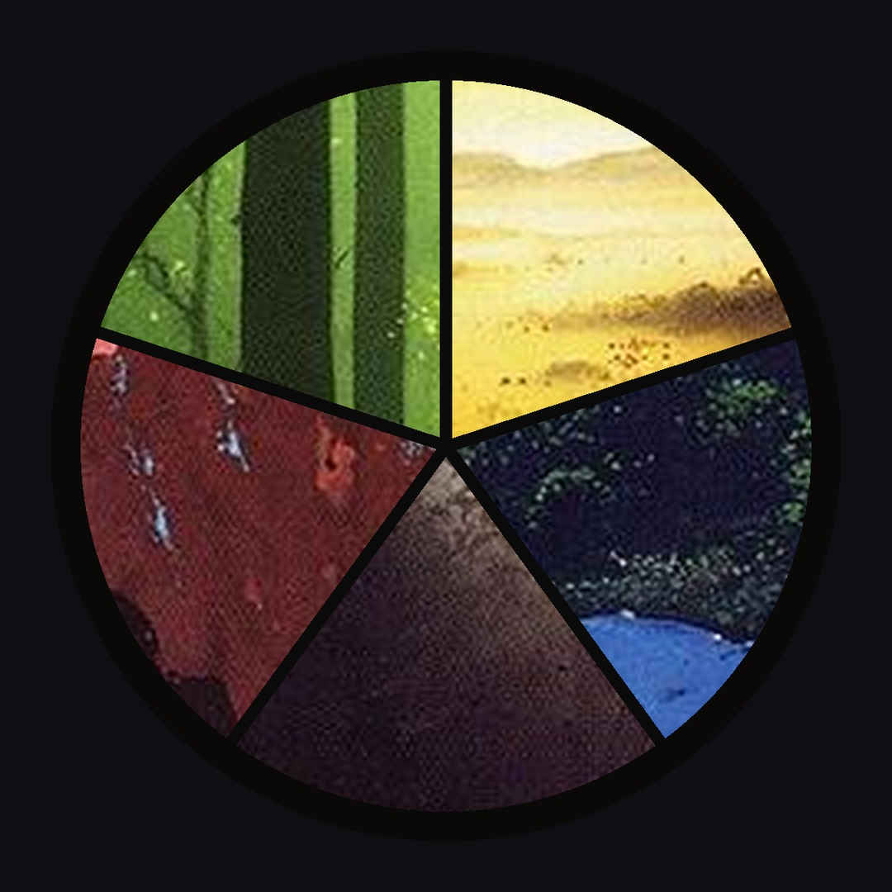
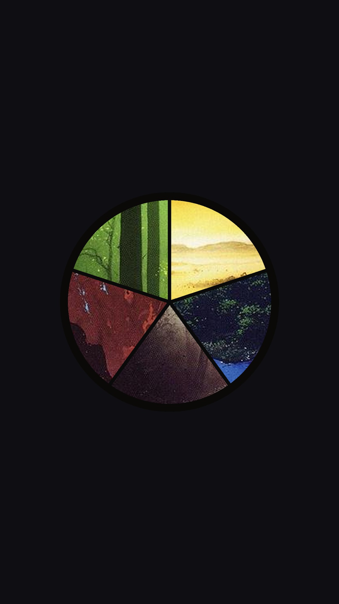
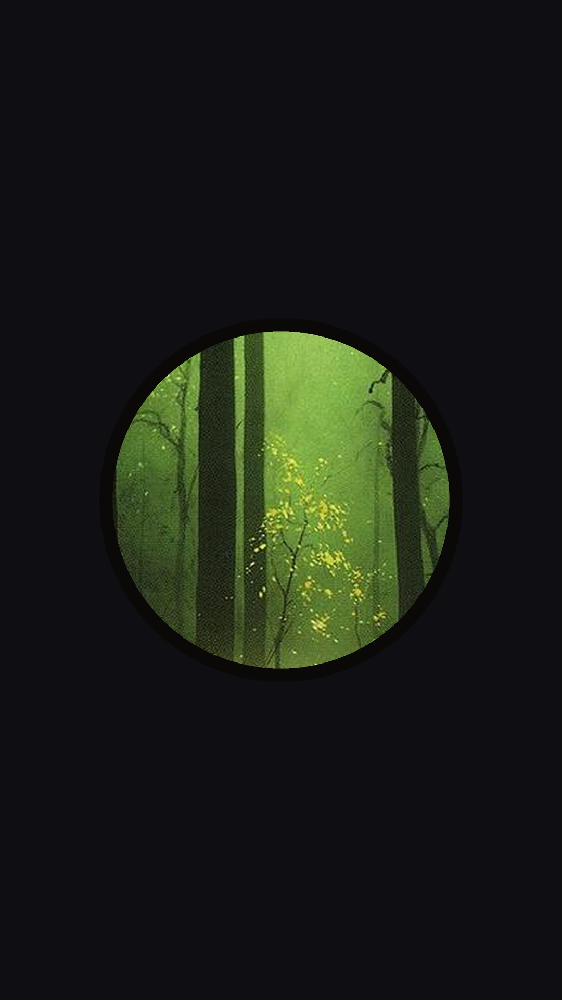
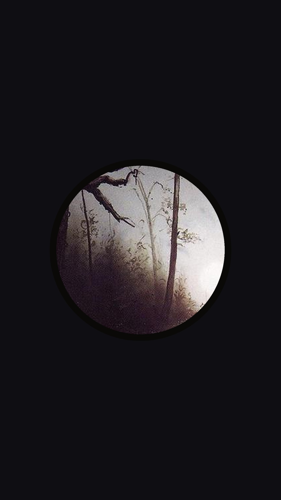
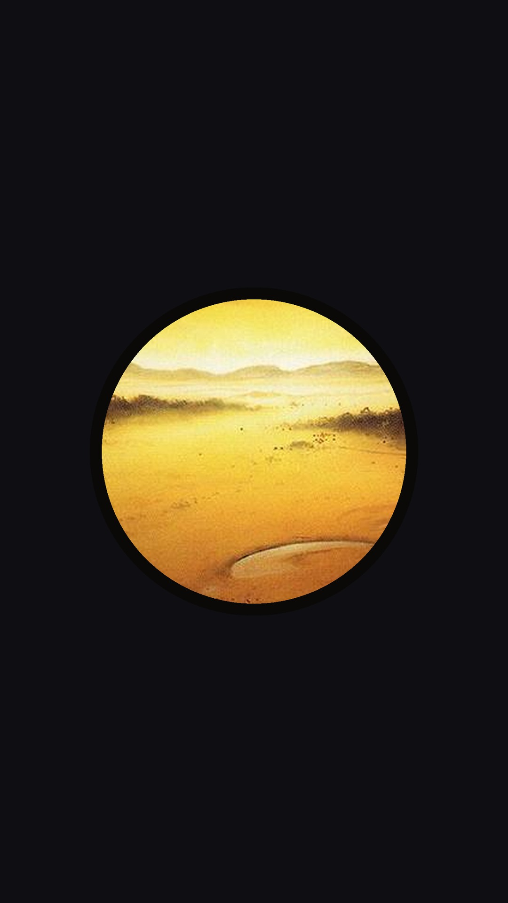
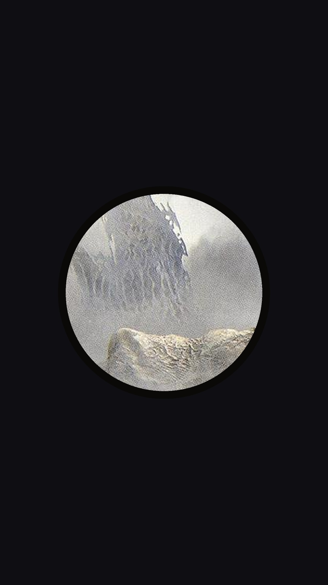

No iPhone ou iPad, toque e segure a imagem e escolha Salvar na Fotos (ou Adicionar às Fotos). No vídeo, toque em Baixar vídeo, abra o download pela setinha da barra do Safari e use Compartilhar e depois Salvar Vídeo. Os textos têm o botão Copiar.
Secret Lair de Magic para Commander com causa: o Rise of the Polygons, do Extra Life, abre venda hoje. São cinco cartas em estilo de videogame dos anos 90: Balefire Dragon, Big Score, Young Pyromancer, Sword of Truth and Justice e uma ficha de Elemental. Sem foil custa US$ 39,99 (R$ 226,02) e foil, US$ 49,99 (R$ 282,53). A venda vai até 30 de novembro, e metade do valor, menos as taxas, vai para a Children's Miracle Network. No Topdeck, Balefire Dragon, o dragão que apaga o campo de quem ele acerta. Nos Sussurros, imagens vazadas de um possível Secret Lair de Duna. Nada confirmado. Você compraria o drop inteiro ou só pegaria o dragão avulso? Edição completa em fontedemana.com.br Arte da capa: Big Score, Brendan Sullivan. Balefire Dragon: Eric Deschamps. Valores em reais pela cotação de 13 nov (Banco Central, PTAX). #secretlair #commander #mtg Fonte de Mana is unofficial Fan Content permitted under the Fan Content Policy. Not approved/endorsed by Wizards. Portions of the materials used are property of Wizards of the Coast. ©Wizards of the Coast LLC.
Commander no bolso: o Secret Lair do Extra Life, com Balefire Dragon em estilo PS1, abre venda hoje e vai até 30 de novembro. Qual carta desse drop entraria no seu deck? Tudo em fontedemana.com.br Valores em reais pela cotação de 13 nov (Banco Central, PTAX). #secretlair #commander #mtg Fonte de Mana is unofficial Fan Content permitted under the Fan Content Policy. Not approved/endorsed by Wizards. Portions of the materials used are property of Wizards of the Coast. ©Wizards of the Coast LLC.
Cada post do Threads aceita até 500 caracteres, e todos aqui cabem. Os posts com imagem e com vídeo já levam o aviso de conteúdo de fã no fim. No fio, publique o post 1 e vá adicionando os seguintes como continuação, na ordem. Os posts avulsos são para espalhar ao longo do dia. Use uma tag por post, a sugestão é MTG.
Abriu hoje a venda do Rise of the Polygons, o Secret Lair do Extra Life, com Balefire Dragon, Sword of Truth and Justice, Big Score e Young Pyromancer em estilo PS1. Sem foil custa US$ 39,99 (R$ 226,02), foil US$ 49,99 (R$ 282,53), até 30 de novembro. Metade vai para a caridade. Você compra o drop ou só a carta avulsa? fontedemana.com.br Valores em reais pela cotação de 13 nov (Banco Central, PTAX).
Abriu hoje a venda do Rise of the Polygons, o Secret Lair beneficente do Extra Life 2026. As artes imitam os gráficos de videogame dos anos 90.
São cinco cartas: Balefire Dragon, Big Score, Young Pyromancer, Sword of Truth and Justice e uma ficha de Elemental. Sem foil custa US$ 39,99 (R$ 226,02) e foil, US$ 49,99 (R$ 282,53). A venda vai até 30 de novembro.
Metade do valor de cada venda, descontadas as taxas, vai para a Children's Miracle Network, que apoia o Extra Life e o Seattle Children's Hospital.
No Topdeck, Balefire Dragon: quando ele causa dano de combate a um jogador, causa o mesmo dano a cada criatura desse jogador. Está em 127 mil decks no EDHREC.
Nos Sussurros, imagens vazadas de um possível Secret Lair de Duna com oito comandantes. A Wizards não confirmou nada.
Edição completa em fontedemana.com.br Valores em reais pela cotação de 13 nov (Banco Central, PTAX).
Fonte de Mana is unofficial Fan Content permitted under the Fan Content Policy. Not approved/endorsed by Wizards. Portions of the materials used are property of Wizards of the Coast. ©Wizards of the Coast LLC.
O Secret Lair do Extra Life tem Balefire Dragon e Sword of Truth and Justice em estilo PS1, e metade vai para a caridade. Você compra o drop inteiro ou só a carta que vai jogar?
Enquete: drop inteiro, carta avulsa ou nenhum






Commander sem complicação, pra quem começa ou voltou Notícia às 6h, regra toda sexta, deck e humor de mesa Conteúdo de fã não oficial